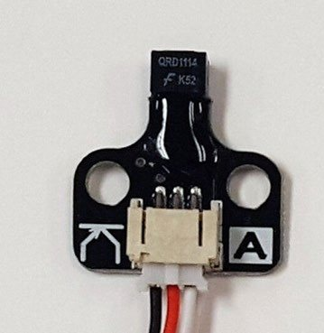

Unit 2 · Big Idea 1
Computers Gather Information From Their Environment
Student Lab · The Touch Sensor
Student PIN:
Overview
All through Unit 1, your robot was blind. It drove for a set time and hoped for the best — it could not feel the world at all. Today that changes. You'll attach a touch sensor to the back of your robot and write a program that drives backward and stops the instant it feels a wall. For the first time, the robot reacts to something real instead of a guessed-at time.
Core Insight
A sensor is how a machine gathers information about the world. Without sensors, a robot can only follow a script. With them, it can respond to what is actually happening.
By the end of this activity you will be able to:
- Explain what a digital sensor is and read the touch sensor with
k.digital(0). - Write a
whileloop that repeats an action until a condition changes. - Drive the robot backward until the touch sensor is pressed, then stop.
- Use reaching the wall as a known spot to reset the robot's stored origin.
Set Up Your Sensor
Before any code
Attach the push button (touch) sensor to the back of your robot, facing backward, so it will press when the robot backs into a wall.
Plug it into digital port 0.
In your program, k.digital(0) reads this sensor: it is 0 when the button is open and 1 when the button is pressed.
New This Time: The while Loop
Until now your code ran top to bottom, once. A while loop lets a block run over and over, checking a condition each time before it repeats.
How it works, step by step:
- Check the condition.
- If it is true, run the indented code — then go back to step 1.
- If it is false, skip the indented code and move on.
The loop keeps checking. That is what lets a robot wait for something to happen instead of guessing how long it will take. To drive until the button is pressed, we loop while the button is NOT pressed:
The moment the button reads 1, the condition k.digital(0) == 0 becomes false, the loop stops, and the program moves on.
You've used k.msleep() to drive for a set time. Inside a loop it does something different — and much smaller.
That k.msleep(10) is not how long you drive. The loop checks the button hundreds of times a second. Without a small pause, it would check as fast as the computer possibly can — and that bogs down the controller for no benefit. A 10 ms pause slows the checking to a sensible rate so the computer isn't overwhelmed, while still feeling instant to us.
Notice how small this is compared to before: k.msleep(1000) used to mean "drive for a whole second." Here k.msleep(10) just means "wait a blink before checking the button again." Same command, completely different job.
Phase 1 — Activate: How Do You Know to Stop?

Close your eyes and slowly back up toward a wall with your hand out behind you. You don't count steps — you wait until your hand feels the wall, then stop. You are using a sensor (your hand) and checking it constantly until it tells you something changed.
Think it through
Why is "feel for the wall, then stop" more reliable than "take exactly 7 steps back"?
How many times per second do you think your hand was "checking" for the wall?
A timed move (drive for 1 second) and a sensed move (drive until you feel the wall) can both reach a wall. Why is the sensed move better when you don't know exactly how far away the wall is?
Phase 2 — Concept: Inputs, Sensors, and Digital Values
A Sensor Is an Input
An input is information coming into the program from the outside world. A sensor is a device that turns something physical — a touch, a distance, a brightness — into a number the program can read. Reading k.digital(0) is the robot gathering an input.
Digital Means Two States
A digital sensor has only two possible readings: 0 or 1. Your touch sensor is digital — the button is either open (0) or pressed (1). There is no "halfway." This is the same true/false, Boolean thinking you used with if statements, now coming from the real world.
Digital vs. Analog (a look ahead)
Some sensors are analog — they return a whole range of numbers, not just 0 or 1 (like a distance sensor reading "how far"). You'll meet those soon. Today's touch sensor is the simplest kind: just 0 or 1.
In your own words: what does it mean that the touch sensor is "digital"? What are its only two possible values, and what does each one mean?
Phase 3 — Plan
The Goal
Back Into the Box
Your robot starts in the field. It must drive backward until its touch sensor presses against the starting-box wall, then stop. Reaching that wall means it is home — a known, reliable spot.
Step 1 — Predict the Sensor Readings
Fill in what k.digital(0) reads in each situation, and what the loop should do.
| Situation | k.digital(0) reads | Loop keeps going? |
|---|---|---|
Driving back, not at wall yet | ||
Button hits the wall |
Step 2 — Write the Plan in Plain English
Before any code, describe your program in order — including what happens the moment the button is pressed.
Phase 4 — Build & Run
⚠ Test in your hands FIRST
Before you ever put this on the board, hold the robot up off the ground and run the program. The wheels will spin backward. Press the button with your finger and watch the wheels stop. Only once that works should you set it on the field. This keeps the robot from driving off a table while you test.
Starting Code Template
Type this program. The position variables are back from before — you'll reset y_position to zero the moment the robot reaches the wall.
Looking ahead: next lab, you'll move the two k.motor() lines to just above the loop, so the loop body is only the msleep. The motors will already be running, and the loop will just wait and watch the sensor.
Run Log
Test in your hands first, then on the board. Record each.
| Test | What you expected | What actually happened |
|---|---|---|
In hand, press by finger | ||
On board, back into wall |
Checklist
- You tested in your hands and saw the wheels stop when you pressed the button
- The loop condition is
k.digital(0) == 0(keep going while NOT pressed) - There is a
k.msleep(10)inside the loop k.ao()comes right after the loop, so the robot stops when pressedy_position = 0resets the origin once the robot is home
Phase 5 — Make It a Reusable Behavior
Once your program works, wrap the whole back-until-pressed behavior into a function so you can reuse it. Remember, in Python you don't write a separate prototype — you just define the function above main(), then call it inside main().
Now that main() just says back_until_pressed(), what does it read like? Why is wrapping the loop in a named function helpful for the rest of the game?
Debugging Log
| Try | What went wrong | Why (your best guess) | How you fixed it |
|---|
Phase 6 — Connect: The AI Literacy Bridge
Big Idea 1 — AI Literacy Thread
Intelligent systems rely on sensors to gather information about the world around them.
Today your robot stopped because it felt a wall, not because a timer ran out. That is the foundation of every intelligent machine: it senses the world and responds to what is really there. A phone screen senses your touch; a car senses the car ahead; a thermostat senses the room's temperature. None of them follow a fixed script — they all watch a sensor and react. And just like you, they check that sensor over and over, many times a second.
Read each scenario. Think it through, then write your answer.
Name a machine you use that reacts to a sensor instead of a timer. What is it sensing, and what does it do when the sensor changes?
Your robot reaching the wall told it "I am home." Why is a sensed, physical landmark a more trustworthy way to reset position than just hoping the robot drove the right distance?
The loop checks the sensor many times a second, with a tiny pause each time. Why does an intelligent system need to keep checking, rather than reading a sensor just once?
Phase 7 — Individual Reflection
Complete this section on your own.
1. What is a digital sensor? What two values can k.digital(0) return, and what does each mean for the touch button?
2. Explain what a while loop does, in your own words. What makes it stop?
3. Why is there a small k.msleep(10) inside the loop? What would happen to the controller without it?
4. Complete this in 2–3 sentences: "Intelligent systems rely on sensors to gather information about the world. This means that a robot without sensors can only..."
Extension Challenges
Finished early? Try one or more of these.
Extension A — Drive Forward After Resetting
- After
back_until_pressed()resets your origin, add a known forward move and updatey_positionas you go (like Unit 1 Big Idea 4). - Because you started from a trusted zero, your stored position should now be accurate. Test whether it is.
Extension B — Change the Speed
- Try a slower backward speed (for example −30). Does the robot stop more precisely at the wall? Why might slower be more accurate?
Extension C — Try a Different msleep
- Change the loop's
k.msleep(10)tok.msleep(200). Press the button quickly and release. Does the robot still catch it? What does this tell you about how often it's checking?
Extension D — Reset Both Coordinates
- If backing straight into the wall sets a known spot, should
x_positionreset too? Decide what makes sense for your robot's path and explain your reasoning.
Extension E — What If It Were Event-Driven?
- Everything you've built waits and checks in a loop (polling) — repeatedly asking "are we there yet?" An event-driven system instead sits idle until something happens, then a designated function runs automatically.
- In words (not code), rewrite how
back_until_pressed()could work if it were event-driven instead of polling: what would the "event" be, and what function would run when it fires?
When you are finished, press the button to turn in your work and save a copy.
KIPR · Botball Explorer · Unit 2 Big Idea 1 — Student Lab